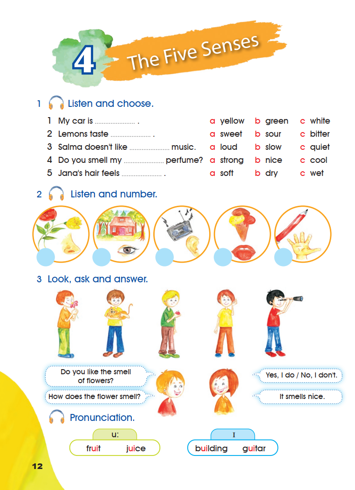
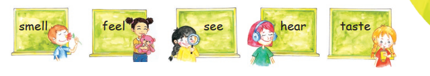
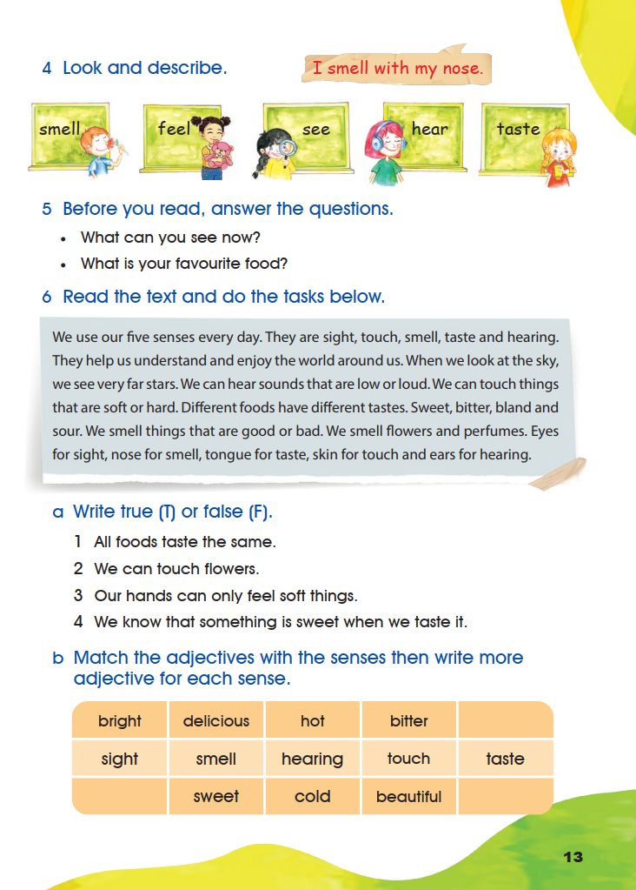
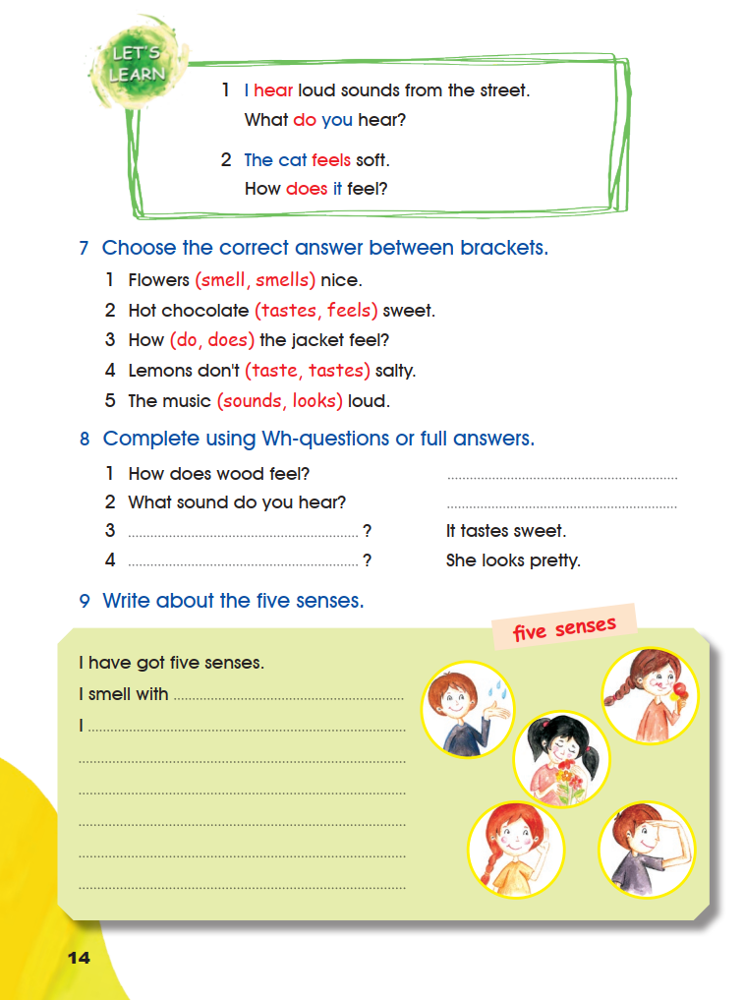
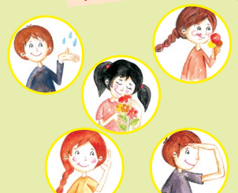

Pupil’s Book — The Five Senses
Activities 1–9 and the Pronunciation box appear in their original order. The book’s wording is transcribed from the three supplied pages. Listening notes are kept separate from that wording.
1 Listen and choose.
0 of 5 chosen. Your choices are kept on this page.
No printed answer. This is a listen-and-choose task, and the recording was not supplied. The five sentences and their three options are reproduced exactly as printed, so you can listen to the original track and choose what you hear. Nothing is marked right or wrong here.
The page prints the options as a, b and c beside each item; that printed order is kept.
2 Listen and number.
0 of 5 numbered. Your numbers are kept on this page.
No printed answer. The order depends on the recording, which was not supplied. The five pictures are original crops of page 12 and are shown in their printed order; the empty circles printed under them are reproduced as number fields.
Open the source page · Pupil’s Book · p. 12
This is the original supplied image, shown without redrawing or generation.

3 Look, ask and answer.
The page prints five pictures and two question frames with their two printed replies. Use the printed questions with each picture, then write your own pair of answers for the partner work.
Do you like the smell of flowers?
How does the flower smell?
Yes, I do / No, I don’t.
It smells nice.
The two printed replies are quoted exactly as the page prints them. Pair-work answers are personal, so no answer key is published for them.
Pronunciation.
u:
- fruit
- juice
ɪ
- building
- guitar
The two sound boxes are reproduced with the symbols the page prints above them. This is a pronunciation activity: listen to the original recording or a reliable model for the sound, then repeat the words.
Open the source page · Pupil’s Book · p. 12
This is the original supplied image, shown without redrawing or generation.
4 Look and describe.
The page prints five sense words with a picture for each, and this printed sentence in red: I smell with my nose.

The five cards are shown in their printed order. Choose the card that matches the printed sentence “I smell with my nose.”
The printed sentence is I smell with my nose. The matching card is smell, so the missing word is nose. The printed card order is smell, feel, see, hear, taste.
The answer follows from the sentence the page prints.
5 Before you read, answer the questions.
- What can you see now?
- What is your favourite food?
These are personal questions from the page; answers will vary, so no key is published.
Open the source page · Pupil’s Book · p. 13
This is the original supplied image, shown without redrawing or generation.

6 Read the text and do the tasks below.
We use our five senses every day. They are sight, touch, smell, taste and hearing. They help us understand and enjoy the world around us. When we look at the sky, we see very far stars. We can hear sounds that are low or loud. We can touch things that are soft or hard. Different foods have different tastes. Sweet, bitter, bland and sour. We smell things that are good or bad. We smell flowers and perfumes. Eyes for sight, nose for smell, tongue for taste, skin for touch and ears for hearing.
The passage is transcribed word for word from the page, including the four one-word sentences “Sweet, bitter, bland and sour.”
a Write true (T) or false (F).
- 1
All foods taste the same.
- 2
We can touch flowers.
- 3
Our hands can only feel soft things.
- 4
We know that something is sweet when we taste it.
0 of 4 answered.
b Match the adjectives with the senses then write more adjective for each sense.
The page prints the following table. Its top and bottom rows hold adjectives and its middle row holds the five senses.
| bright | delicious | hot | bitter | |
| sight | smell | hearing | touch | taste |
|---|---|---|---|---|
| sweet | cold | beautiful |
Choose the sense you would match with each printed adjective.
Write one more adjective for each sense.
a. True or false
- All foods taste the same. — False. The text says “Different foods have different tastes.”
- We can touch flowers. — True. The text says “We can touch things that are soft or hard”, and flowers are things we can touch.
- Our hands can only feel soft things. — False. The text says we can touch things that are soft or hard.
- We know that something is sweet when we taste it. — True. The text lists sweet among the tastes of food.
b. Adjectives and senses
The book prints no answer key for this table, and the table’s top and bottom rows do not sit directly above or below one sense. These suggestions follow the meaning of each adjective:
- bright — sight (something we see)
- delicious — taste (food that tastes very good)
- hot — touch (how something feels)
- bitter — taste
- sweet — taste
- cold — touch (how something feels)
- beautiful — sight (something we see)
These are suggested matchings, not a printed key. The extra adjectives you write are your own work and are not marked.
Open the source page · Pupil’s Book · p. 13
This is the original supplied image, shown without redrawing or generation.
Let’s Learn
1 I hear loud sounds from the street.
What do you hear?
2 The cat feels soft.
How does it feel?
The box contrasts the statement with its question. With I and you the question uses do; with he, she or it the question uses does and the verb loses its -s.
7 Choose the correct answer between brackets.
- 1
Flowers nice.
- 2
Hot chocolate sweet.
- 3
How the jacket feel?
- 4
Lemons don’t salty.
- 5
The music loud.
0 of 5 chosen.
- Flowers smell nice. — “Flowers” is plural, so the verb has no -s.
- Hot chocolate tastes sweet. — Sweetness is a taste.
- How does the jacket feel? — “The jacket” is singular (it), so the question uses does.
- Lemons don’t taste salty. — After don’t the plain verb is used.
- The music sounds loud. — Loudness is a sound.
Open the source page · Pupil’s Book · p. 14
This is the original supplied image, shown without redrawing or generation.

8 Complete using Wh-questions or full answers.
Items 1 and 2 print a question and a dotted answer line. Items 3 and 4 print a dotted question line and a full printed answer.
- 1
How does wood feel?
- 2
What sound do you hear?
- 3
?
It tastes sweet.
- 4
?
She looks pretty.
1. Wood feels hard. (The answer must describe how wood feels.)
2. I hear a car. (Any sound you can hear.)
3. How does it taste? / What does it taste like? — the printed answer “It tastes sweet” is about taste.
4. How does she look? — the printed answer “She looks pretty” is about appearance.
The page prints no key. Items 1 and 2 are personal descriptions, so the samples show the pattern rather than a single required wording.
9 Write about the five senses.

I have got five senses.
I smell with ……………
I ………………………………………………………
I have got five senses. I smell with my nose. I see with my eyes. I hear with my ears. I taste with my tongue. I feel with my skin.
The first two lines are printed on the page; the rest is personal writing, so this model shows the pattern and your own words are accepted.
Open the source page · Pupil’s Book · p. 14
This is the original supplied image, shown without redrawing or generation.